HEALPix
Introduction
Various schemes for decomposing a sphere into a set of pixels exist. I have been working with HEALPix which uses equal-area quadilaterals. The HEALPix acronym comes from Hierarchical Equal Area isoLatitude Pixelization. In addition to providing equal area cells for pixels, the scheme also allows you to easily decompose geospatial data into simple one dimensional arrays. At resolution 0 you need 12 pixels to hold the data. 48 at resolution 1, 192 as resolution 2, etc. The images below automatically step through resolutions 0 through 5.
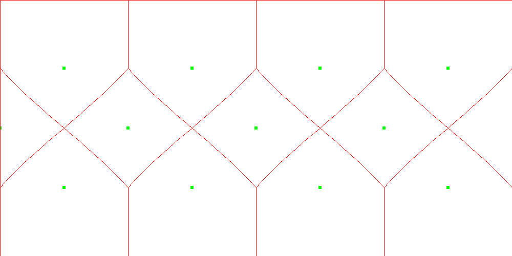 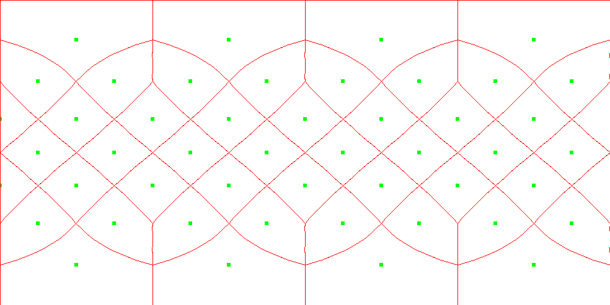 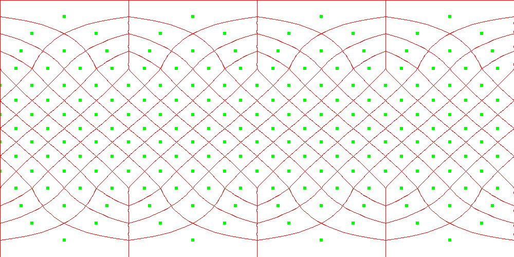 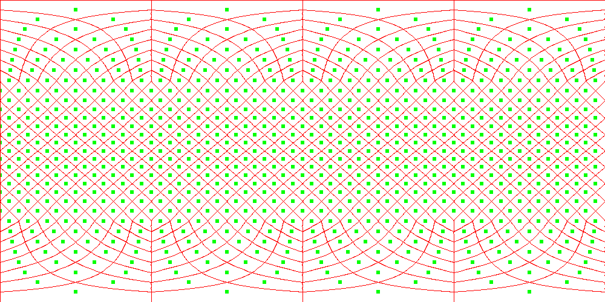 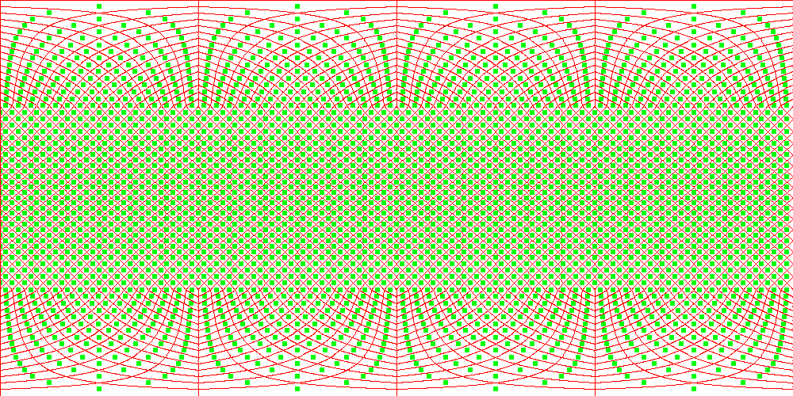 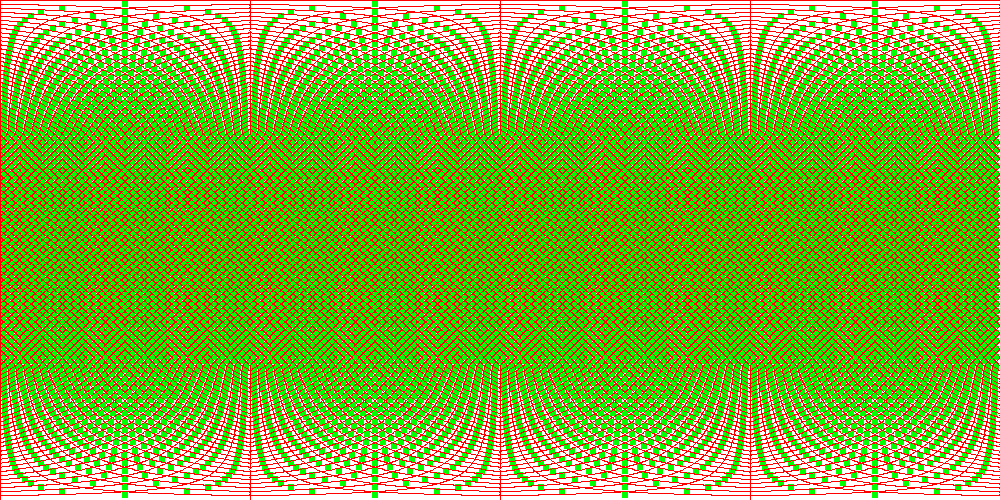The 2D projection shows exaggerated shapes near the poles. This is correct. The equal area shape is intended for the 3D surface of a sphere. I have used the Three.js library to create a zoomable/pannable sphere with HEALPix boundaries. You can view the 3D model here 🔗. Click the buttons in the upper left to switch between HEALPix resolutions. The controls in Three.js allow you to left click to rotate and scroll to zoom.
Geospatial Analysis
The HEALPix scheme can be used to create equal-area bins to measure quantities on the surface of the earth. The image below is a NASA composite image of night lights called Black Marble. The lights in the image are a good proxy for both population and economic activity.
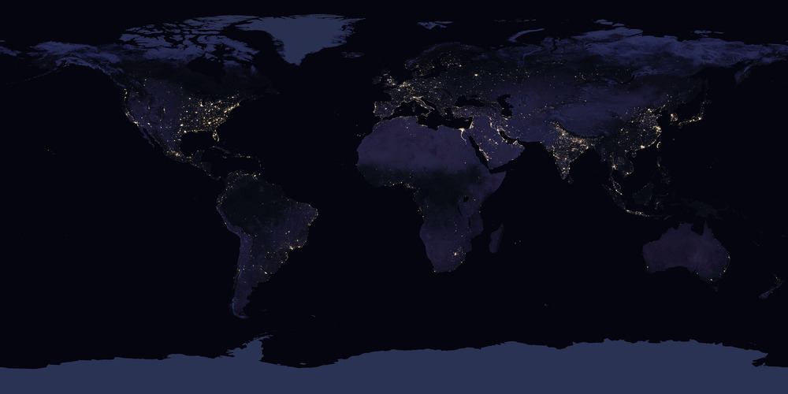
To test the relationship between population and night lights, we can create a pixelization at HEALPix level 10. In each pixel or bin we can count the total population. For our source of population data we use the locations from the GeoNames. Each location has a latitude and longitude which we can convert to a HEALPix pixel index. We can create an array of size 12582912 for level 10 data. Each index in the array holds the total population for locations in that HEALPix cell. After adding up all the population values, we can compute the log base 10 population in each cell. If we then plot our HEALPix data in 2D we get the following image.
You can view the Black Marble gray scale image and our HEALPix population count in 3D by clicking here 🔗. The population data is not all from the same year. Some locations are decades old. However, the log of population seems to be an OK match to the lights. Economics plays a role as well. North Korea is a famous example of a high population but low level of lighting. If the night-light data were reprojected to HEALPix cells, we could calculate the correlation between the light intensity and the log of popluation directly. It would be as easy as computing the correlation between two 1D arrays. If the data is computed at different resolutions, no problem. The higher resoluation can be very easily downsampled to match the other. Each pixel retains its equal area properties. This makes geospatial correlations very easy to perform.
The animation below shows the effect of increasing the resolution of the HEALPix grid. Clicking on the image will bring you to a bigger version of the image. The structure results from binning data that was originally a set of points.
Astronomy
The HEALPix format was originally designed for use with astronomy datasets, especially whole-sky data. Earlier this year, the ESA GAIA project released parallax data on over 1.6 billion stars in the Milky Way. They also released as subset of 7 million stars with radial velocities as well. If we bin the location of the stars using Right Ascension and Declination for the HEALPix coordinates we get the image below.
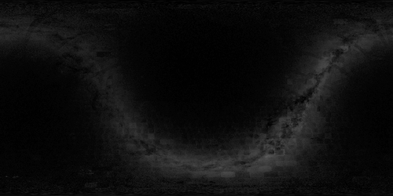
The galactic coordinate system uses the plane and center of the Milky Way to define two angles. Using those with HEALPix gives the following image.
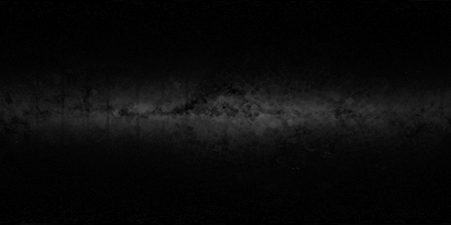
The previous two images simply counted the number of stars in each bin. They also exhibit some stripes and box artifacts caused by the way the survey was divided up in RA/Dec coordinates. The GAIA data set also includes the flux, or amount of light, from each star. We can add up all the light in each part of the sky and put that in a HEALPix bin.
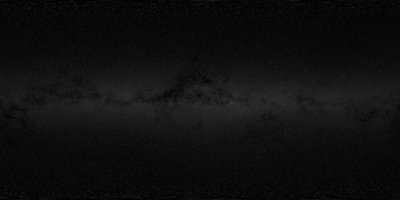
We can compare this to an Astronomy Picture Of the Day by Nick Risinger. His image is a mosaic showing the entire Milky Way.

This subset of GAIA is biased towards relatively closer stars, but the main size shape, and dust features of the Milky Way are accurately recreated. You can view these images in a Three.js globe here 🔗. The Small and Large Magellanic Clouds are visible in the full 1.6 billion star GAIA data set, but do not show up in the 7 million star subset.
We can also plot the density of galaxies measured by the 2MASS all sky survey. The distribution of galaxies in the sky gives information about the large scale structure of the universe. In the image below we see signs of the massive voids between strings and clumps of galaxies.
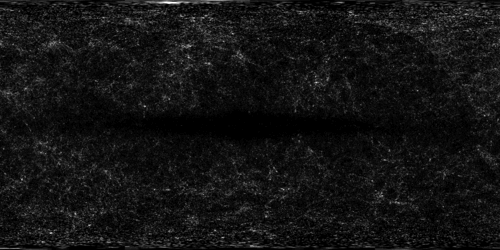
External Links
Visit these links for more information about HEALPix and software implementations.